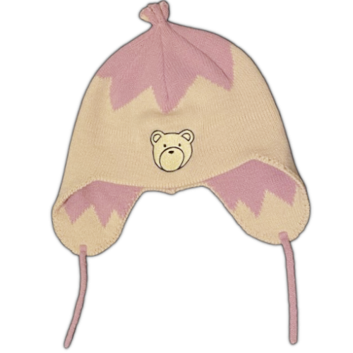
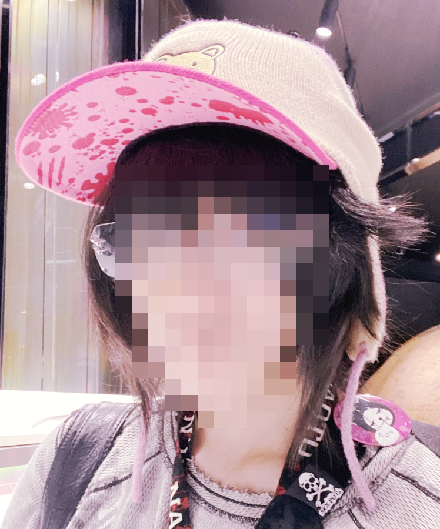

2025.12.01

ANGELtype started off as an LA-based otaku fashion brand in 2020 and has since fazed out all of their otaku catalog by 2024, and now takes after contemporary minimalist streetwear. They still work with fabric and knit but they specialize in sterling jewelry for the most part.
This hat is now discontinued, which sucks because its one of the best replicas I've seen of the original animated hat. I bought it back when I was working on my homemade handinavi computer.
For an otaku brand ANGELtype was the best above all clothing labels that started off on Instagram. No contest. They made bootlegs seem high-end; their mohair Nana sweater and NGE jewelry comes to mind.
